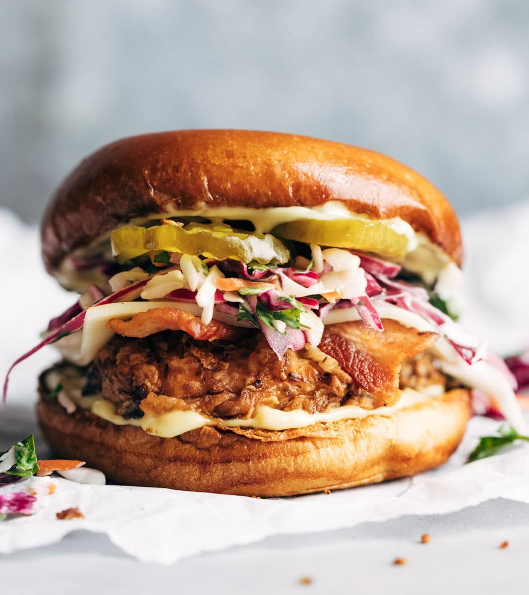

1: In a large bowl, combine 2 tablespoons oil, lemon juice and seasonings; add the chicken 2: In a large cast-iron or other heavy skillet, saute peppers and onions in remaining oil until crisp-tender 3: Drain chicken, discarding marinade 4: Spoon filling down the center of tortillas; fold in half

1 can (16 ounces) whole kernel corn, drained. 1: 1 large tomato, seeded and chopped. 2: 1/2 cup chopped celery. 3: 1/2 cup chopped cucumber. 4: 1/3 cup finely chopped green pepper. 5: 1/4 cup finely chopped onion. 6: 1/4 cup sour cream. 7: 2 tablespoons mayonnaise OPTIONAL!!!
1: In a small bowl, mix mayonnaise, mustard and honey. Pound chicken with a meat mallet to 1/2-in. thickness. Sprinkle chicken with any seasoning of your choice 2: Grill buns over medium heat, cut side down, until toasted, 30-60 seconds. Serve chicken on buns with bacon, mayonnaise mixture and, if desired, lettuce and tomato